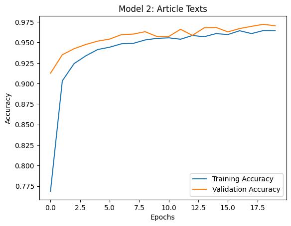
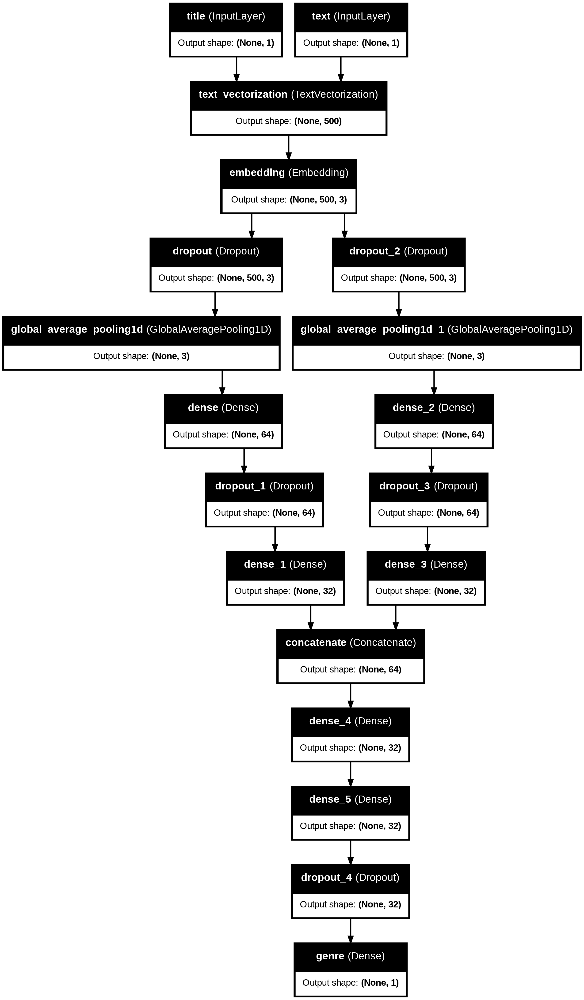
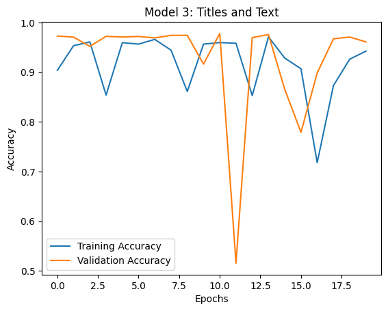
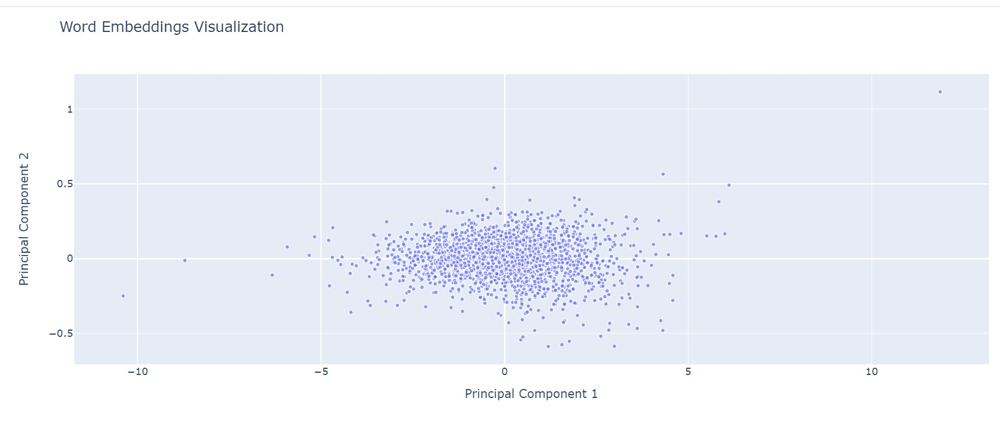

Fact or Fiction? Fake News Classification Using Keras
Homework
code
Week 10
Author
Isabella Woulfe
Published
March 11, 2024
Fact or Fiction?
Fake News Classification using Keras
The spread of false information, also reffered to as “fake news”, is a contant plague on modern life. Fake news can be extremely harmful to our society as a whole. But with today’s technology, we have tools that could combat the force that is fake news. In today’s blog post, we will use Keras and Machine Learning to classify articles as being truthful or not.
As always, we must start by importing the necassary packages and upgrading our Keras. Please run the following two code cells before we start uploading our dataset and defining our model.
!pip install keras --upgrade
Requirement already satisfied: keras in /usr/local/lib/python3.10/dist-packages (2.15.0)
Collecting keras
Downloading keras-3.0.5-py3-none-any.whl (1.0 MB)
━━━━━━━━━━━━━━━━━━━━━━━━━━━━━━━━━━━━━━━━ 1.0/1.0 MB 6.9 MB/s eta 0:00:00
Requirement already satisfied: absl-py in /usr/local/lib/python3.10/dist-packages (from keras) (1.4.0)
Requirement already satisfied: numpy in /usr/local/lib/python3.10/dist-packages (from keras) (1.25.2)
Requirement already satisfied: rich in /usr/local/lib/python3.10/dist-packages (from keras) (13.7.1)
Collecting namex (from keras)
Downloading namex-0.0.7-py3-none-any.whl (5.8 kB)
Requirement already satisfied: h5py in /usr/local/lib/python3.10/dist-packages (from keras) (3.9.0)
Requirement already satisfied: dm-tree in /usr/local/lib/python3.10/dist-packages (from keras) (0.1.8)
Requirement already satisfied: ml-dtypes in /usr/local/lib/python3.10/dist-packages (from keras) (0.2.0)
Requirement already satisfied: markdown-it-py>=2.2.0 in /usr/local/lib/python3.10/dist-packages (from rich->keras) (3.0.0)
Requirement already satisfied: pygments<3.0.0,>=2.13.0 in /usr/local/lib/python3.10/dist-packages (from rich->keras) (2.16.1)
Requirement already satisfied: mdurl~=0.1 in /usr/local/lib/python3.10/dist-packages (from markdown-it-py>=2.2.0->rich->keras) (0.1.2)
Installing collected packages: namex, keras
Attempting uninstall: keras
Found existing installation: keras 2.15.0
Uninstalling keras-2.15.0:
Successfully uninstalled keras-2.15.0
ERROR: pip's dependency resolver does not currently take into account all the packages that are installed. This behaviour is the source of the following dependency conflicts.
tensorflow 2.15.0 requires keras<2.16,>=2.15.0, but you have keras 3.0.5 which is incompatible.
Successfully installed keras-3.0.5 namex-0.0.7
!pip install nltk
Requirement already satisfied: nltk in /usr/local/lib/python3.10/dist-packages (3.8.1)
Requirement already satisfied: click in /usr/local/lib/python3.10/dist-packages (from nltk) (8.1.7)
Requirement already satisfied: joblib in /usr/local/lib/python3.10/dist-packages (from nltk) (1.3.2)
Requirement already satisfied: regex>=2021.8.3 in /usr/local/lib/python3.10/dist-packages (from nltk) (2023.12.25)
Requirement already satisfied: tqdm in /usr/local/lib/python3.10/dist-packages (from nltk) (4.66.2)
#import all of the necessary packagesimport pandas as pdimport tensorflow as tfimport tensorflow_datasets as tfdsimport matplotlib.pyplot as pltimport nltkfrom nltk.corpus import stopwordsimport kerasimport reimport stringfrom keras import layers, lossesfrom keras.layers import TextVectorizationfrom keras import utils
Now that we have imported all of our packages, we can start by acquiring our training data. Our data is in the form of different articles that we accessed from Kaggle. By running the code cell below, we can upload the link to the data and organize it into a dataframe using pandas. Please run the code cell below and see the resulting table for our
train_url ="https://github.com/PhilChodrow/PIC16b/blob/master/datasets/fake_news_train.csv?raw=true"#csv file into dataframedf = pd.read_csv(train_url)df.head()
Unnamed: 0
title
text
fake
0
17366
Merkel: Strong result for Austria's FPO 'big c...
German Chancellor Angela Merkel said on Monday...
0
1
5634
Trump says Pence will lead voter fraud panel
WEST PALM BEACH, Fla.President Donald Trump sa...
0
2
17487
JUST IN: SUSPECTED LEAKER and “Close Confidant...
On December 5, 2017, Circa s Sara Carter warne...
1
3
12217
Thyssenkrupp has offered help to Argentina ove...
Germany s Thyssenkrupp, has offered assistance...
0
4
5535
Trump say appeals court decision on travel ban...
President Donald Trump on Thursday called the ...
0
We now have successfully accessed our data that we will use to train our model! Before we continue, we must organize this data into a dataset. Using the following function, we will change all text to lowercase letters, remove stopwords, and create a dataset with inputs title and text and outputs a fake column. It is very important to have all of the necessary packages in order for us to filter out stop words and make a dataframe.
Please run the code cell below to define the make_dataset function.
def make_dataset(df):""" Function will create a dataset of our data and organize it with the given conditions Arguments: df : pandas DataFrame containing columns: title, text, and fake Returns: dataset : the dataset we created with the specified conditions (TensorFlow) """#lowercase text df['text'] = df['text'].apply(lambda x: x.lower())#remove stopwords nltk.download('stopwords') stop = stopwords.words('english') df['text'] = df['text'].apply(lambda x: ' '.join([word for word in x.split() if word notin (stop)])) title_tensor = tf.constant(df['title'].values, dtype=tf.string) text_tensor = tf.constant(df['text'].values, dtype=tf.string) fake_tensor = tf.constant(df['fake'].values, dtype=tf.int32) dataset = tf.data.Dataset.from_tensor_slices(({"title": title_tensor, "text": text_tensor}, fake_tensor)) dataset = dataset.batch(100)#outputs our datasetreturn dataset
Now that our function is defined, we can use our training dataframe to output a dataset. Please run the code cell below to create a dataset from our training dataframe.
#create dataset using training data (see above)ds = make_dataset(df)
[nltk_data] Downloading package stopwords to /root/nltk_data...
[nltk_data] Unzipping corpora/stopwords.zip.
For our next step, we will work with the validation set. This will involve taking 20% of our training data set to use for the validation.
The base rate is used to determine the accuracy of the model. It allows us to find a value to compare the results of our model to. Please run the code cell below to determine the base rate for our dataset.
#determine the base rate for our training datasetfake_count =0total_count =0for _, labels in train: fake_count += tf.reduce_sum(labels).numpy() total_count +=len(labels)base_rate = fake_count / total_countprint("Base rate:", base_rate)
Base rate: 0.5237222222222222
After printing the base rate, ppreapre the text vectorization for the model. The following code cell was given in the Homework 6 blog post. Please run the code cell below before proceeding with the models.
#preparing a text vectorization layer for tf modelsize_vocabulary =2000def standardization(input_data): lowercase = tf.strings.lower(input_data) no_punctuation = tf.strings.regex_replace(lowercase,'[%s]'% re.escape(string.punctuation),'')return no_punctuationtitle_vectorize_layer = TextVectorization( standardize=standardization, max_tokens=size_vocabulary, # only consider this many words output_mode='int', output_sequence_length=500)title_vectorize_layer.adapt(train.map(lambda x, y: x["title"]))
The following cell will also add an embedding layer that will be used in our models. This layer will access the word embeddings that we will use to determine whether or not our articles can be classified as fake news. Please run the code cell below.
We can now start on defining our three models that will be used to determine the validity of different news sources.
Model 1
In our first model, our only input will be the article title. This means that the article title will be used by our model to determine how we classify the given article. We will define the following layers below to create our model. Please run the code cell below to create the first model.
#defining the model when the input is our article titletitle_input = tf.keras.Input(shape=(1,), dtype=tf.string, name="title")title_features = title_vectorize_layer(title_input)title_features = shared_embedding_layer(title_features)title_features = layers.Dropout(0.5)(title_features)title_features = layers.GlobalAveragePooling1D()(title_features)title_features = layers.Dense(64, activation='relu')(title_features)title_features = layers.Dropout(0.3)(title_features)title_features = layers.Dense(32, activation='relu')(title_features)title_output = layers.Dense(1, activation='sigmoid', name="title_output")(title_features)#create model 1model_1 = tf.keras.Model(inputs=title_input, outputs=title_output)model_1.summary()
Now that we have created Model 1, we can visualize and further understand the structure of the model by creating a flowchart. The following code was provided in the blog post instructions to complete this step. Please run the code below.
Please run the code cell below to compile our data.
#compile with training and valiation datamodel_1.compile(optimizer='adam', loss='binary_crossentropy', metrics=['accuracy'])history_1 = model_1.fit(train, epochs=20, validation_data=val)
Now that we have completed all of work to run and populate our model with our training data, we can create a visualization to the accuracy of our model. Similar to last blog post, we will use the package matplotlib to create line graphs that compare the validation accuracy with the model accuracy. Please run the code cell below to create our plot for Model 1.
#plot accuracy of training data vs. validation dataplt.plot(history_1.history['accuracy'], label='Training Accuracy')plt.plot(history_1.history['val_accuracy'], label='Validation Accuracy')plt.xlabel('Epochs')plt.ylabel('Accuracy')plt.title('Model 1: Article Titles')plt.legend()plt.show()
The validation accuracy is consistantly higher than the training accuracy. The validation accuract flucutates for periods but never experiences dramatic drops. In all, the accuracy never seems to exceed a rate of 95%
Model 2
In our second model, our only input will be the article text. This means that the text of each article will be used by our model to determine how we classify the given article. We will define the following layers below to create our model. Please run the code cell below to create the second model.
#defining our model when our input is the text of the articletext_input = tf.keras.Input(shape=(1,), dtype=tf.string, name="text")text_features = title_vectorize_layer(text_input)text_features = shared_embedding_layer(text_features)text_features = layers.Dropout(0.5)(text_features)text_features = layers.GlobalAveragePooling1D()(text_features)text_features = layers.Dense(64, activation='relu')(text_features)text_features = layers.Dropout(0.3)(text_features)text_features = layers.Dense(32, activation='relu')(text_features)text_output = layers.Dense(1, activation='sigmoid', name="text_output")(text_features)#create nodel 2model_2 = tf.keras.Model(inputs=text_input, outputs=text_output)model_2.summary()
Now that we have created Model 2, we can visualize and further understand the structure of the model by creating a flowchart. The following code was provided in the blog post instructions to complete this step. Please run the code below.
#visualize model 2 (flowchart)utils.plot_model(model_2, "model_2.png", show_shapes=True, show_layer_names=True)
Please run the code cell below to compile our data.
#compile with the training and validation datamodel_2.compile(optimizer='adam', loss='binary_crossentropy', metrics=['accuracy'])history_2 = model_2.fit(train, epochs=20, validation_data=val)
Now that we have completed all of work to run and populate our model with our training data, we can create a visualization to the accuracy of our model. Similar to last blog post, we will use the package matplotlib to create line graphs that compare the validation accuracy with the model accuracy. Please run the code cell below to create our plot for Model 2.
#plot validation accuract vs. training accuracy of modele 2plt.plot(history_2.history['accuracy'], label='Training Accuracy')plt.plot(history_2.history['val_accuracy'], label='Validation Accuracy')plt.xlabel('Epochs')plt.ylabel('Accuracy')plt.title('Model 2: Article Texts')plt.legend()plt.show()

The validation accuracy for model 2 was consistently higher than the training accuracy. In general, we can see rates under about 96%.
Model 3
In our third model, our inputs will be both the article text and the article title. This will work as a sort of combination of the first and second model. In theory, we should expect this model to be the most accurate as it takes the most information as inputs and allows the model to make the best decision. Please run the code cell below to create the third model.
main = layers.concatenate([title_features, text_features], axis =1)
main = layers.Dense(32, activation='relu')(main)main = layers.Dense(32, activation='relu')(main)main = layers.Dropout(0.3)(main)output = layers.Dense(1, name ="genre")(main)
#define our model so that our inputs are both article title and article textmodel_3 = keras.Model( inputs = [title_input, text_input], outputs = output)model_3.summary()
Now that we have created Model 3, we can visualize and further understand the structure of the model by creating a flowchart. The following code was provided in the blog post instructions to complete this step. Please run the code below.
#create visualization of model 3 (flowchart)utils.plot_model(model_3, "model_3.png", show_shapes=True, show_layer_names=True)

Please run the code cell below to compile our data.
#compile with the training and validation datamodel_3.compile(optimizer='adam', loss='binary_crossentropy', metrics=['accuracy'])history_3 = model_3.fit(train, epochs=20, validation_data=val)
Now that we have completed all of work to run and populate our model with our training data, we can create a visualization to the accuracy of our model. Similar to last blog post, we will use the package matplotlib to create line graphs that compare the validation accuracy with the model accuracy. Please run the code cell below to create our plot for Model 3.
#plot validation accuracy vs. training accuracy for model 3plt.plot(history_3.history['accuracy'], label='Training Accuracy')plt.plot(history_3.history['val_accuracy'], label='Validation Accuracy')plt.xlabel('Epochs')plt.ylabel('Accuracy')plt.title('Model 3: Titles and Text')plt.legend()plt.show()

This model experienced some overfitting and lots of flucuations. However, it did see a very high accuracy and regularly reached a rate that exceeded 97%.
Testing with New Data
We have successfully created three different models! Using the model that performed the best, model 3, we will use a new dataset and classify these articles as fake news or not. This dataset will be different than the one we used to train our three models.
To start off, please run the code cell below to import our new dataset.
This model had an accuracy of about 97% for this new set of data.
Visual Embedding
In the last section of today’s blog post, we will visualize the embedding of our third model. This requires us to use PCA from sklearn. Please run the code cell below.
weights = model_3.get_layer('embedding').get_weights()[0] # get the weights from the embedding layervocab = title_vectorize_layer.get_vocabulary() # get the vocabulary from our data prep for laterfrom sklearn.decomposition import PCApca = PCA(n_components=2)weights = pca.fit_transform(weights)embedding_df = pd.DataFrame({'word' : vocab,'x0' : weights[:,0],'x1' : weights[:,1]})
Finally, import our plotly package and make a visualization in the form of the scatterplot
#necessary packagesimport plotly.express as pximport numpy as np#create visualizationfig = px.scatter(embedding_df, x ="x0", y ="x1", size =list(np.ones(len(embedding_df))), size_max =5, hover_name ="word", title='Word Embeddings Visualization')fig.update_layout( xaxis=dict(title='Principal Component 1'), yaxis=dict(title='Principal Component 2'),)fig.show()

embeddedvisual.jpg
Words in our articles are closer to each other in this visualization if they are thought to have similar meetings. This scatterplot helps further our understanding of how our model determines what is clasified as fake news. Logically, I believe our plot makes sense as words that I would anticipate to be related are plotted next to each other such as “rule” and “court”. Other words such as “blacklivesmatter”, “cnn”, and “boycotts” were also plotted near one another. In my opinion, these words are correlated as they are all associated with the democratic party. In all, this allowed me to ensure my plot was accurate.
Through this post, I hope you have a better understanding of how to use machine learning in the form of language processors and text classification. As fake news is a growing phenomena in the US, it is very important that we as a country find ways to combat the rampant spread of misinformation. Thank you for reading!